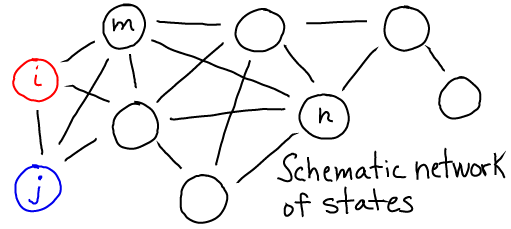
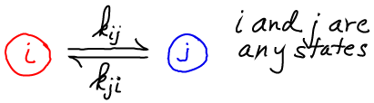
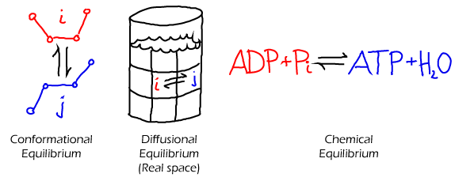
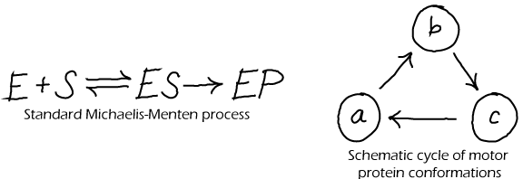

$
\newcommand{\conc}[1]{[\mathrm{#1}]}
\newcommand{\conceq}[1]{[\mathrm{#1}]^{\mathrm{eq}}}
\newcommand{\kcat}{k_{\mathrm{cat}}}
\newcommand{\kdt}{k_{\mathrm{dt}}}
\newcommand{\kdtsol}{k^{\mathrm{sol}}_{\mathrm{dt}}}
\newcommand{\kkeq}{K^{\mathrm{eq}}}
\newcommand{\kmmon}{\kon^{\mathrm{ES}}}
\newcommand{\kmmoff}{\koff^{\mathrm{ES}}}
\newcommand{\kconf}{k_{\mathrm{conf}}}
\newcommand{\koff}{k_{\mathrm{off}}}
\newcommand{\kon}{k_{\mathrm{on}}}
\newcommand{\ktd}{k_{\mathrm{td}}}
\newcommand{\ktdsol}{k^{\mathrm{sol}}_{\mathrm{td}}}
\newcommand{\ss}{\mathrm{SS}}
$
Equilibrium and Detailed Balance
Equlibrium has a very precise meaning in statistical physics, which also applies to biology.
Equilibrium describes the average behavior (averaged over many systems under
identical conditions) in which there is no net flow of material, probability
or reactions.
- Equilibrium is not static because each individual system undergoes its
ordinary behavior/dynamics.
- There will be no net flow in any "space" examined: real-space, conformation
space, or population space.
- Equilibrium can only occur under fixed conditions (e.g., constant
temperature and total mass) when there is no addition or removal of
energy or material from the system.
- The requirement for "no net flow of material, probability or reactions" is embodied in the condition for detailed balance.

Detailed Balance
Detailed balance is the balance of flows between any (and every) pair of states you care to define. Typically, one thinks of "detailed" infinitesimal states, but a balance of flows among tiny states implies a balance of flows among global states which are groups of tiny states.
"Flow" refers to the motion of material or trajectories/probability, depending on the situation at hand.

In this schematic, $i$ and $j$ are any states, and the $k$'s are the rates between them.
If we have $N = \sum_i N_i$ equilibrium systems with $N_i$ systems in each state $i$, then detailed balance is formulated as
\begin{equation}
\label{detbal}
N_i \, k_{ij} = N_j \, k_{ji}
\end{equation}

- In a solution. As always in equilibrium, we have (at least conceptually) a large number of copies of our system. If we consider any two sub-volumes ($i$ and $j$) in just one of these systems, some set of molecules will move from region to the other in a given time interval. However, in our equilibrium set of systems, there will be other systems in which the opposite flow occurs. Averaging over all systems, there is no net flow of any type of molecule between any two sub-volumes in equilibrium. This is detailed balance. (See also the time-averaging perspective, below.)
- In a chemical reaction. Normally, we distinguish "products" and "reactants", but equilibrium largely abolishes this distinction. As described above for the solution case, if we have an equilibrium set of many chemical-reaction systems, an equal number will be proceeding in the forward (say, $i$ to $j$) and reverse ($j$ to $i$) directions. Although, nominally, a reaction may seem to prefer a certain direction, in equilibrium that just means that the products of the favored direction will be present in greater quantity (e.g., $N_j \gg N_i$) - even though the forward and reverse flows stay the same as in \eqref{detbal} because the rates would be very different ($k_{ji} \ll k_{ij}$).
- In a conformation space of a single molecule. In an equilibrium set of molecules with, say, two conformational states A and B, there will be an equal number of A-to-B as B-to-A transitions in any given time interval. If there are many states, then there will be a balance between all pairs of states $i$ and $j$ as given in \eqref{detbal}.
Time vs. Ensemble Averaging
It is useful to consider the relation between "ensemble averaging" (e.g., averaging over the set of equilibrium systems described above) and "time averaging". Time-averaging is just what you would guess: averaging behavior (e.g., values of a quantity of interest) over a long period of time.
In equilibrium, time averaging and ensemble averaging will yield the same result.
To see this, consider a solution containing many molecules diffusing around and perhaps exhibiting conformational motions as well.
Assume the system has been equilibrating for a time much longer than any of its intrinsic timescales (inverse rates).
Because finite-temperature motion in a finte system is inherently stochastic, over a long time each molecule will visit different regions of the container and also different conformations - in the same proportion as every other molecule.
If we take a snapshot at any given time of this equilibrium system, the "ensemble" of molecules in the system will exhibit the same distribution of positions and conformations as a long single trajectory of any individual molecule.
This has to be true because the snapshot itself results from the numerous stochastic trajectories of the molecules that have evolved over a long time.
Unphysical Models Cannot Equilibrate

Although every physical system that is suitably isolated will reach a state of equilibrium, that does not mean that every model made by scientists can properly equilibrate. In fact, many common models of biochemistry exhbit "irreversible" steps - in which the reverse of some step never occurs - and could never satisfy detailed balance.
The Michaelis-Menten model of catalysis (above left) is an irrervsible model.
Such model irreversibility typically represents the observation that the forward rate exceeds the reverse rate so greatly that the reverse process can safely be ignored. This may be true in some cases, but here are numerous cases in biochemistry where reversibility is critical, such as typical binding processes (unbinding is needed to terminate a signal) and in ATP synthase (which can make ATP or pump protons depending on conditions).
For corrected (physically possible) versions of the cycles depicted above, see the discussion of cycles.